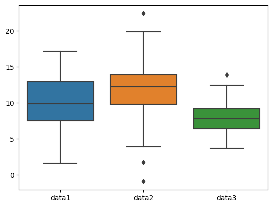
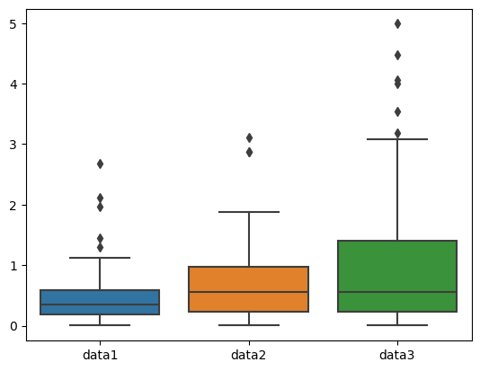

[2]:
!pip install seaborn
Requirement already satisfied: seaborn in /opt/anaconda3/lib/python3.11/site-packages (0.12.2)
Requirement already satisfied: numpy!=1.24.0,>=1.17 in /opt/anaconda3/lib/python3.11/site-packages (from seaborn) (1.26.4)
Requirement already satisfied: pandas>=0.25 in /opt/anaconda3/lib/python3.11/site-packages (from seaborn) (2.1.4)
Requirement already satisfied: matplotlib!=3.6.1,>=3.1 in /opt/anaconda3/lib/python3.11/site-packages (from seaborn) (3.8.0)
Requirement already satisfied: contourpy>=1.0.1 in /opt/anaconda3/lib/python3.11/site-packages (from matplotlib!=3.6.1,>=3.1->seaborn) (1.2.0)
Requirement already satisfied: cycler>=0.10 in /opt/anaconda3/lib/python3.11/site-packages (from matplotlib!=3.6.1,>=3.1->seaborn) (0.11.0)
Requirement already satisfied: fonttools>=4.22.0 in /opt/anaconda3/lib/python3.11/site-packages (from matplotlib!=3.6.1,>=3.1->seaborn) (4.25.0)
Requirement already satisfied: kiwisolver>=1.0.1 in /opt/anaconda3/lib/python3.11/site-packages (from matplotlib!=3.6.1,>=3.1->seaborn) (1.4.4)
Requirement already satisfied: packaging>=20.0 in /opt/anaconda3/lib/python3.11/site-packages (from matplotlib!=3.6.1,>=3.1->seaborn) (23.1)
Requirement already satisfied: pillow>=6.2.0 in /opt/anaconda3/lib/python3.11/site-packages (from matplotlib!=3.6.1,>=3.1->seaborn) (10.2.0)
Requirement already satisfied: pyparsing>=2.3.1 in /opt/anaconda3/lib/python3.11/site-packages (from matplotlib!=3.6.1,>=3.1->seaborn) (3.0.9)
Requirement already satisfied: python-dateutil>=2.7 in /opt/anaconda3/lib/python3.11/site-packages (from matplotlib!=3.6.1,>=3.1->seaborn) (2.8.2)
Requirement already satisfied: pytz>=2020.1 in /opt/anaconda3/lib/python3.11/site-packages (from pandas>=0.25->seaborn) (2023.3.post1)
Requirement already satisfied: tzdata>=2022.1 in /opt/anaconda3/lib/python3.11/site-packages (from pandas>=0.25->seaborn) (2023.3)
Requirement already satisfied: six>=1.5 in /opt/anaconda3/lib/python3.11/site-packages (from python-dateutil>=2.7->matplotlib!=3.6.1,>=3.1->seaborn) (1.16.0)
[3]:
import seaborn as sns
[5]:
# Libraries
import seaborn as sns # visualisation
import matplotlib.pyplot as plt # visualisation
import numpy as np # algebra
import pandas as pd # data
Boxplot
Normal Distribution
[7]:
# Create a random data for demonstration purposes
np.random.seed(123) # for reproductibility
# Dictionary with 3 variables of gaussian low of size 100
data = {'data1': np.random.normal(10, 3, size=100),
'data2': np.random.normal(12, 4, size=100),
'data3': np.random.normal(8, 2, size=100)}
# Create a dataframe:
df = pd.DataFrame(data)
# Create a Boxplot
sns.boxplot(df)
# Show the plot
plt.show()

Exponential Distribution
$ f(x; \frac{1}{\beta}) = \frac{1}{\beta} \exp`(-:nbsphinx-math:frac{x}{beta}`) \text{ for ``x > 0` and 0 elsewhere}`. $
$:nbsphinx-math:text{beta is the scale parameter which is the inverse of the rate parameter } \lambda = 1/\beta $.
\(f(x) = \text{This is a } a \text{ with space}.\)
[11]:
np.random.exponential?
Docstring:
exponential(scale=1.0, size=None)
Draw samples from an exponential distribution.
Its probability density function is
.. math:: f(x; \frac{1}{\beta}) = \frac{1}{\beta} \exp(-\frac{x}{\beta}),
for ``x > 0`` and 0 elsewhere. :math:`\beta` is the scale parameter,
which is the inverse of the rate parameter :math:`\lambda = 1/\beta`.
The rate parameter is an alternative, widely used parameterization
of the exponential distribution [3]_.
The exponential distribution is a continuous analogue of the
geometric distribution. It describes many common situations, such as
the size of raindrops measured over many rainstorms [1]_, or the time
between page requests to Wikipedia [2]_.
.. note::
New code should use the `~numpy.random.Generator.exponential`
method of a `~numpy.random.Generator` instance instead;
please see the :ref:`random-quick-start`.
Parameters
----------
scale : float or array_like of floats
The scale parameter, :math:`\beta = 1/\lambda`. Must be
non-negative.
size : int or tuple of ints, optional
Output shape. If the given shape is, e.g., ``(m, n, k)``, then
``m * n * k`` samples are drawn. If size is ``None`` (default),
a single value is returned if ``scale`` is a scalar. Otherwise,
``np.array(scale).size`` samples are drawn.
Returns
-------
out : ndarray or scalar
Drawn samples from the parameterized exponential distribution.
See Also
--------
random.Generator.exponential: which should be used for new code.
References
----------
.. [1] Peyton Z. Peebles Jr., "Probability, Random Variables and
Random Signal Principles", 4th ed, 2001, p. 57.
.. [2] Wikipedia, "Poisson process",
https://en.wikipedia.org/wiki/Poisson_process
.. [3] Wikipedia, "Exponential distribution",
https://en.wikipedia.org/wiki/Exponential_distribution
Type: builtin_function_or_method
[20]:
# Create a random data for demonstration purposes
np.random.seed(123) # for reproductibility
# Dictionary with 3 variables of gaussian low of size 100
data = {'data1': np.random.exponential(0.5, size=100),
'data2': np.random.exponential(0.7, size=100),
'data3': np.random.exponential(0.9, size=100)}
# Create a dataframe:
df = pd.DataFrame(data)
# Create a Boxplot
sns.boxplot(df)
# Show the plot
plt.show()

[10]:
np.random.exponential?
Docstring:
exponential(scale=1.0, size=None)
Draw samples from an exponential distribution.
Its probability density function is
.. math:: f(x; \frac{1}{\beta}) = \frac{1}{\beta} \exp(-\frac{x}{\beta}),
for ``x > 0`` and 0 elsewhere. :math:`\beta` is the scale parameter,
which is the inverse of the rate parameter :math:`\lambda = 1/\beta`.
The rate parameter is an alternative, widely used parameterization
of the exponential distribution [3]_.
The exponential distribution is a continuous analogue of the
geometric distribution. It describes many common situations, such as
the size of raindrops measured over many rainstorms [1]_, or the time
between page requests to Wikipedia [2]_.
.. note::
New code should use the `~numpy.random.Generator.exponential`
method of a `~numpy.random.Generator` instance instead;
please see the :ref:`random-quick-start`.
Parameters
----------
scale : float or array_like of floats
The scale parameter, :math:`\beta = 1/\lambda`. Must be
non-negative.
size : int or tuple of ints, optional
Output shape. If the given shape is, e.g., ``(m, n, k)``, then
``m * n * k`` samples are drawn. If size is ``None`` (default),
a single value is returned if ``scale`` is a scalar. Otherwise,
``np.array(scale).size`` samples are drawn.
Returns
-------
out : ndarray or scalar
Drawn samples from the parameterized exponential distribution.
See Also
--------
random.Generator.exponential: which should be used for new code.
References
----------
.. [1] Peyton Z. Peebles Jr., "Probability, Random Variables and
Random Signal Principles", 4th ed, 2001, p. 57.
.. [2] Wikipedia, "Poisson process",
https://en.wikipedia.org/wiki/Poisson_process
.. [3] Wikipedia, "Exponential distribution",
https://en.wikipedia.org/wiki/Exponential_distribution
Type: builtin_function_or_method